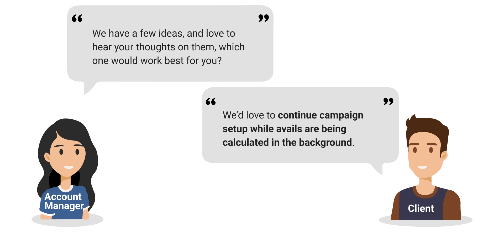
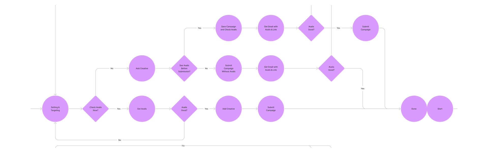
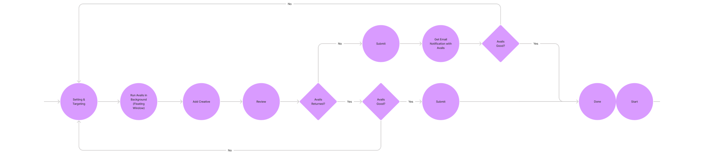
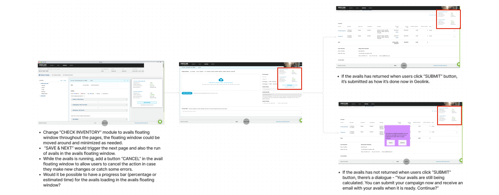
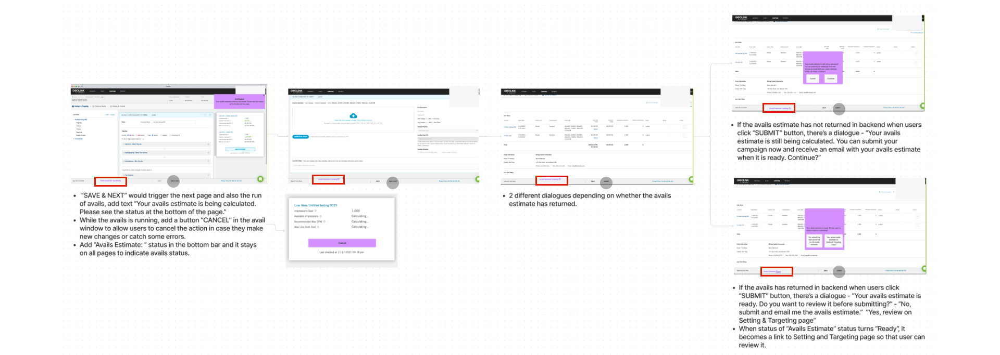

With the platform acquisitions over the years and the rising of inconsistent user experience and UI, our UX Director decided that we should have our own design system.
The effort started with a design system from scratch, and ended up with a Material-Design-inspired design system “InMarKit” that led to 30% time saving for design prototyping, and 40% time saving for front-end engineering.
On-going (from 08/2021)
In-house (InMarket)
In-house product design team, and front-end engineer team
InMarket platforms were not consistent in UX/UI design & development.
Design and develop the first design system for the InMarket platforms
The solution led to 30% time saving for design prototyping, and 40% time saving for front-end engineering.
InMarKit for Designers gets released in Figma for the design team to easily reference and use. It's created and maintained by designers with interactive components and detailed documentation.
InMarKit for Engineers gets released with Storybook for front-end engineer team to play and reference. It's developed with reference to the InMarKit for Designers, and maintained by the lead engineer.
Over the years, InMarket acquired a few location-based advertising companies along with their SaaS platforms. However, the platforms were drastically different in UX and UI, and the InMarket branding was weak, and there’s no well-documented design guidelines.

InMarKit would exist in both design doc and code base, thus it could work for both design and development team.

Most InMarket platforms are B2B SaaS platforms with users typically working with the Internet browsers on computer screens, so the design system should be strong on that.
It’s important to develop the design system for not only designers but also engineers. In this way, we can achieve huge time savings for product development.
Most InMarket platforms are data-heavy with a lot of lists, charts, and graphs. So it’s important to have a design system that’s strong in data visualization.
The design system should be strong in accessibility, and offer good user experience to a variety of users.
The design system should work well on different devices and screen sizes while the focus would be desktop.
The design system should avoid confusion and unneccesary questions, and embrace clear and succinct documentation.
InMarKit v1 was inspired by Ant Design, and the work flow was this:
Ant Design (Figma)
Ant Design was built with Figma, and it has:

InMarKit v1 (Adobe XD)
Our InMarKit v1 was built with Adobe XD, and Adobe XD did not offer pages!!! So I had to lay out the documentation strategically in a single design space:

I constantly checked in with the team when designing new components, and made sure that the whole team agreed on the design before I put it into the design system.

We had an approval line in the Adobe XD design space, and we put approved content below the line, so that engineers knew what content would be implementation-ready.

We worked very closely with the lead engineer, and lived in the same Slack channel. So we constantly updated and checked in with the engineer for implementation.

No!
We evaluated the outcome and came to the conclusion:
We then tried to explore some other options, and Material Design stood out.

Speed!
There was ongoing engineering effort to reduce the wait time for avails, and it did improve slowly.
However, this time is different - a big client threatened to leave us if we didn’t fix it within the upcoming months, and it would be a big hit to our revenue. So I met with the PM and established that we should put speed as the top priority for the project even if the process could become “dirty”.

Age: 29
Status: Single
Location: Lancaster, PA
Work Experience: 6 Years
Talia is an Ad Ops working for a small-mid size advertising agency (50-200 employees) in Lancaster, PA. She enjoys the world of marketing, and is absolutely an expert in Hands On Keyboard media buying. She implements strategies, sets up campaigns, monitors and optimizes them for good performance, and reports back to the clients regularly. She also makes sure to analyze performance to maximize KPIs and keep updating strategies. She uses various platforms for her work, including GeoLink and some other DSPs.
The project is very time sentitive, and the team should put design and development speed as the very top priority of the project.
In order to deliver a working solution with the intense timeline, the development effort should be kept to low-mid level, and work with existing components.
We are delivering the solution to the existing platform, so we should keep the visual consistency and work with the existing visual styles and components.
The users can choose to totally skip avails when setting up campaigns.
The users can select certain line items that they want to get avails for, and leave the others out of the calculation.
The users can continue campaign setup while avails are being calculated in the background.
Then I asked the account managers to bring the ideas in front of the users to get feedback:
Idea #3 - Run in Background!
The winning solution was idea #3 - The users can continue campaign setup while avails are being calculated in the background.
The existing flow would only allow the users to proceed when the users get the avails, and the avails look good:

The flow design would allow the users to proceed with campaign setup with or without avails, and get avails later from the notification emails:
I walked through the flow design v1 with the engineers, and they gave me some awesome suggestions:

Per the engineer feedback, I cleaned up the flow design:
The users can continue campaign setup with a floating window that indicates the status of the avails.
The users can continue campaign setup with a status in the bottom bar that indicates the status of the avails.
Option 2!
I presented the options to the PM, and the PM decided to talk to engineers to understand the effort needed for the implementation.
The engineers came back and decided that option 1 (with floating window) would require much more development than option 2 (with status in the bottom bar). So in order to acheive our limited timeline, we decided to go with option 2 (with status in the bottom bar).
The users can see the avail status in the bottom bar, and it shows the notice about email notification if the users want to submit campaign without avails ready.

The users would get email notification if the avails are not ready when they submit the campaigns, so that the users can make adjustments to the campaigns as needed.


I checked in with the engineers and found out the technical limitation:


The platform has the working solution in place and it's helping the users with tremendous time saving.
The email notification was implemented as designed with simple and clear messages.

The users (clients) that complaint about the long wait for the avails are now happy with the solution according to GeoLink team members.
The average time for campaign setup went down from 49 mins to 16 mins - a huge saving in users’ time, and a huge improvement in efficiency!
GeoLink did not lose any users (clients), and is stronger than ever with 52% revenue increase YOY for Q2 2022.
GeoLink won "Product of the Year" at Business Intelligence Group's 2022 Sales and Marketing Technology Awards!
If the project timeline allows, engage users more directly in the design process to get 1st hand feedback and data.
Conduct direct usability tests and send out surveys to keep iterating on the design for better usability and higher efficiency.
If the project timeline allows, document the research and design effort better.